Part 1: Creating and Plotting Curves
Contents
"Hello World" Example
As a first example, we create two curves f and g, compute their sum h = f + g, and we plot all three curves in different colors.
f = rtccurve([[0 1 1];[8 9 0.25]]); g = rtccurve([[0 1 0];[1 2 0]], 0, 5, 2); h = rtcplus(f, g); rtcplot(f, 'r', g, 'b', h, 'g', 20);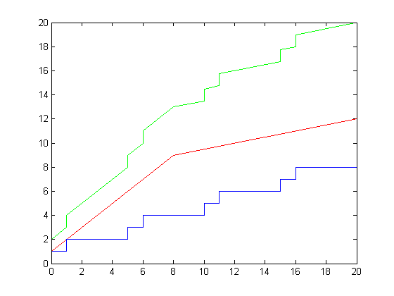
Creating Curves
In the RTC Toolbox, the rtccurve function is used to generate arbitrary curves. The RTC Toolbox also provides a number of specialized functions that can be used to easily create instances of some very common curve types, but these will be explained later.
A curve is defined over the complete positive x-axis x >= 0, and consists of a list of so-called curve segments. Every curve segment is specified by its starting point coordinates (x,y) and its slope s. In Matlab, a single curve segment is represented by an array of doubles [x y s], and a list of curve segments is represented by a matrix of doubles [[x1 y1 s1];[x2 y2 s2];[x3 y3 s3]].
The simplest example of a curve consists only of a single curve segment.
f = rtccurve([[0 0 1]]); rtcplot(f, 20);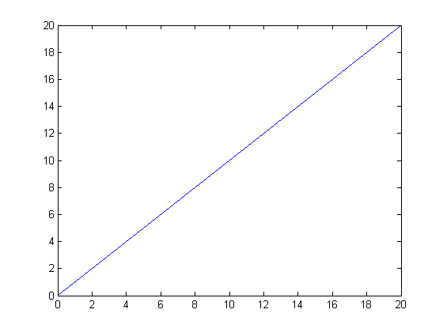
If a curve consists of more than one curve segment, then the range of every curve segment is defined between its start point and the start point of the next curve segment. Note, that the first segment of a curve must always start at x = 0.
f = rtccurve([[0 0 1];[2 2 0.25]]); rtcplot(f, 20);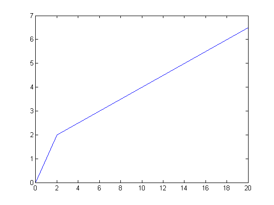
If the end point of a curve segment does not coincide with the start point of the next curve segment, then the curve exhibits a discontinuity at this point. The RTC Toolbox does not define whether a discontinuity is treated as left- or right-continuous. However, the various functions of the RTC Toolbox will interpret a discontinuity correctly as either left- or right-continuous depending on the context of the curve.
f = rtccurve([[0 0 1];[2 3 0.25]]); rtcplot(f, 20);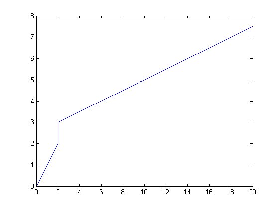
A curve may also exhibit a discontinuity at x = 0. Note however, that such a curve is interpreted by the RTC Toolbox to have the value 0 for x = 0, and a value not equal 0 for x > 0.
f = rtccurve([[0 1 1];[2 3 0.25]]); rtcplot(f, 20);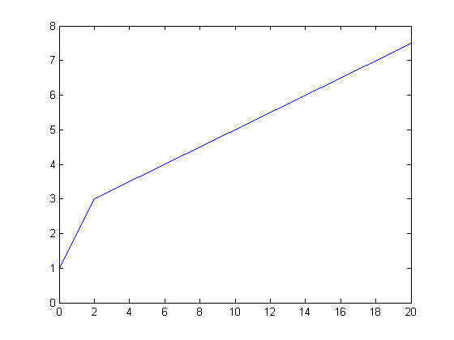
It is also possible to create curves that consist of an infinite number of curve segments. For this, a finite length list of curve segments is repeated periodically. In the context of the RTC Toolbox, this periodically repeated finite length list of curve segments is called the periodic part of a curve.
The following command creates a curve with a periodic part that is repeated with a period of p = 5.
f = rtccurve([[0 0 1];[2 2 0.25]], 5); rtcplot(f, 20);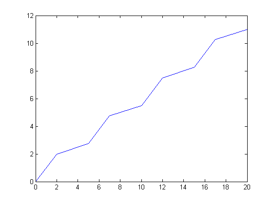
The periodic part does not need to start at y = 0. The following command creates a curve with a periodic part that starts at y = 10 and that is repeated with a period of p = 5. Note that the period p needs to be an integer!
f = rtccurve([[0 0 1];[2 2 0.25]], 10, 5); rtcplot(f, 20);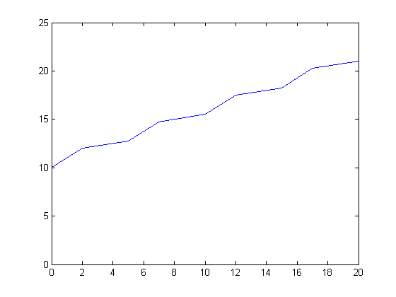
Furthermore, the offset on the y-axis between two successive repetitions of the periodic part can be stated explicitly. The following command creates a curve with a periodic part that starts at y = 10 and that is repeated with a period of p = 5 and an offset of o = 4.
f = rtccurve([[0 0 1];[2 2 0.25]], 10, 5, 4); rtcplot(f, 20);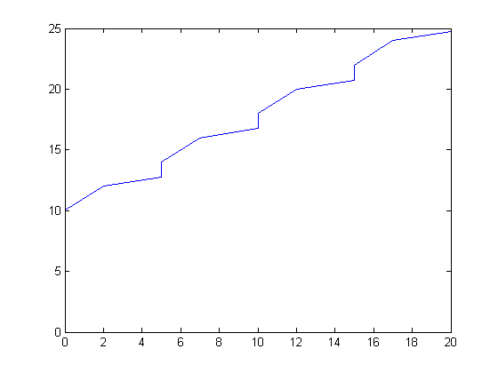
Finally, a curve that consists of an infinite number of curve segments can also be defined by a finite length list of curve segments that defines an arbitrary long start sequence of the curve, and a periodically repeated periodic part that defines the curve after this start sequence. In the context of the RTC Toolbox, the finite length list of curve segments that defines the start sequence of a curve is called the aperiodic part of the curve.
The following command creates a curve with an aperiodic part as = [[0 2 2]] that consists of a single curve segment, and a periodic part ps = [[0 0 1];[2 2 0.25]] that consists of two curve segments. The periodic part of the curves starts at x = 3 and y = 10, and has a period p = 5 and an offset o = 4. Again note, that periods need to be integer.
f = rtccurve([[0 2 2]], [[0 0 1];[2 2 0.25]], 3, 10, 5, 4); rtcplot(f, 20);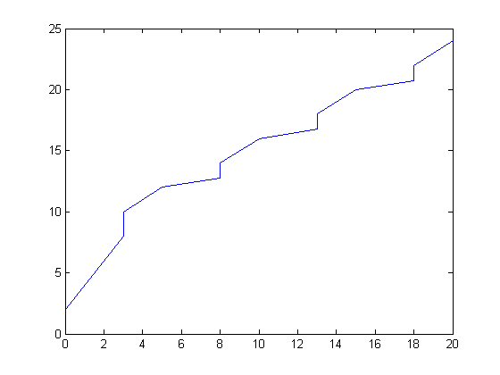
If the offset between two successive repetitions of the periodic part is not stated explicitly, it is automatically set such that a new repetition of the periodic part starts at the end point of the previous repetition.
f = rtccurve([[0 2 2]], [[0 0 1];[2 2 0.25]], 3, 10, 5); rtcplot(f, 20);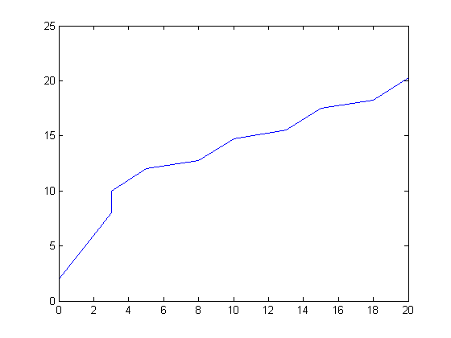
Finally, if the y-value of the start point for the periodi part is not stated explicity, it is automatically set such that the first periodic part starts at the end point of the aperiodic part.
f = rtccurve([[0 2 2]], [[0 0 1];[2 2 0.25]], 3, 5); rtcplot(f, 20);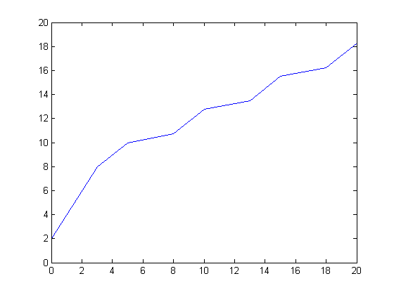
Plotting Curves
The rtcplot function can be used to visualize curves in the RTC Toolbox.
Let us first create two curves f and g
f = rtccurve([[0 2 2]], [[0 0 1];[2 2 0.25]], 3, 5); g = rtccurve([[0 0 0];[5 0 1];[10 5 2]]);
The following command plots f in a range 0 <= x <= 20
rtcplot(f, 20);
The plot range can easily be specified and can be chosen arbitrarily. Note however, that a curve is not defined for x < 0 and therefore the plot range must be a positive number.
rtcplot(f, 200);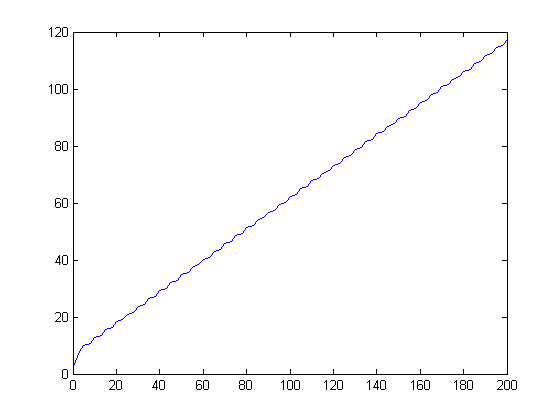
The plot range can also be specified detailed by providing a range on both the x- and the y-axis. The following command plots f in a range 10 <= x <= 20 and 12 <= y <= 22
rtcplot(f, [10 20 12 22]);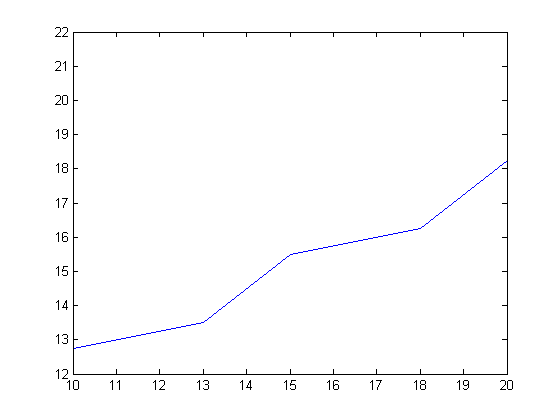
Various line types, plot symbols and colors may be specified to plot a curve by providing a character string as used in the native MATLAB plot command. For example the following command plots f with a red dotted line.
rtcplot(f, 'r:', 20);
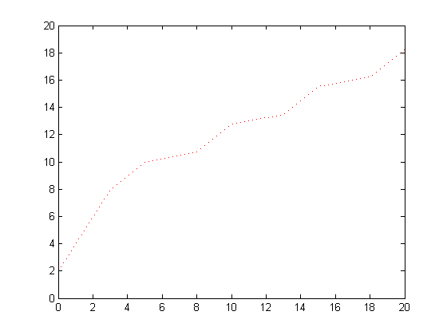 It is also possible to plot more than one curve in the same graph.
rtcplot(f, g, 20);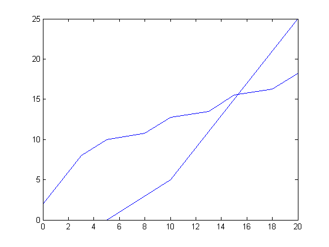
By providing a seperate specification string after every curve, it is possible to use a different line style for every curve in a graph. For example the following command plots f with a red dotted line and g with a green dashed line.
rtcplot(f, 'r:', g, 'g--', 20);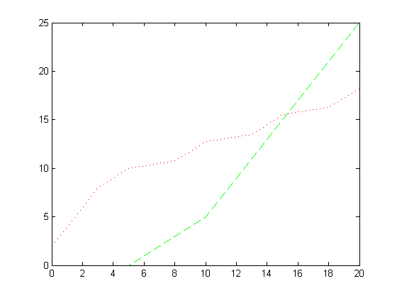
Finally, the various plot parameters can be followed by parameter/value pairs to specify additional properties of the lines, as used in the native MATLAB plot command. The following command plots the curves f and g as in the previous example but with a line width of 3.
rtcplot(f, 'r:', g, 'g--', 20, 'LineWidth', 3);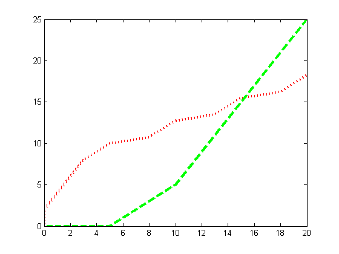
Returning the y-coordinates of a Curve
Let us first create a curve f.
f = rtccurve([[0 1 0];[1 2 0]], 0, 5, 2);
rtcplot(f,'b',10);
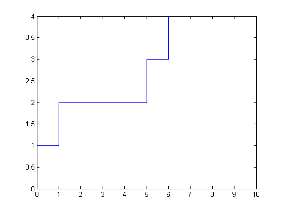 The y-coordinate of a curve f at any x-coordinate can be obtained by using the function y = rtcvalue(f,x,dir). The input parameter dir can make a difference when x is a point of discontinuity on the curve. If dir >= 0 then y = f(x+epsilon), otherwise y = f(x-epsilon). The following command will return the value of the curve f at x=5+epsilon.
y = rtcvalue(f,5,1);
disp(['y = ', num2str(y)]);
y = 3
However, the y value is different when taken at 5-epsilon because x=5 is a point of discontinuity for curve f:
y = rtcvalue(f,5,-1);
disp(['y = ', num2str(y)]);
y = 2
Such differences are important when one considers left-continuous and right-continuous curves. For a detailed explanation see: Jean-Yves Le Boudec and Patrick Thiran. Network calculus: a theory of deterministic queuing systems for the internet, volume 2050 of LNCS. Springer-Verlag, 2001.
Exporting Curves
The export function can be used to export curves into a text file for later use. This function generates a string that, when executed in Matlab, is function call that will create a copy of the exported curve.
rtcexport(f)
ans = rtccurve([[0.0 0.0 0.0];[1.0 1.0 0.0]], 1.0, 5, 2.0)